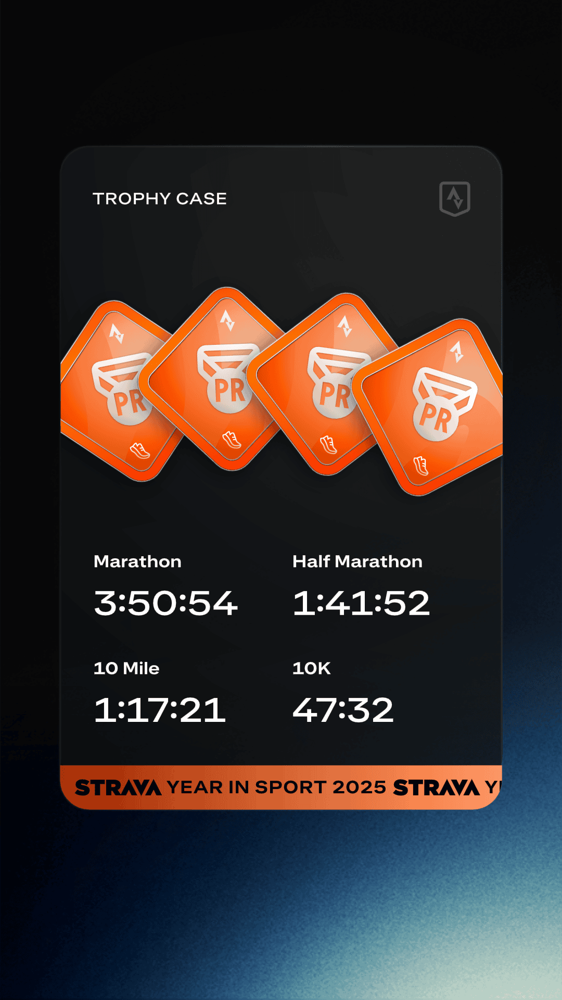
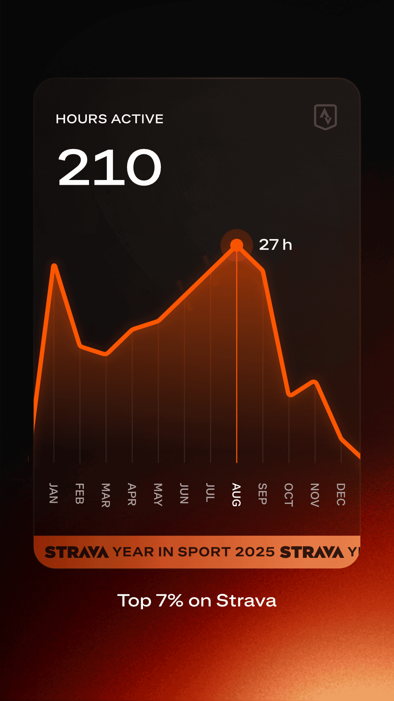
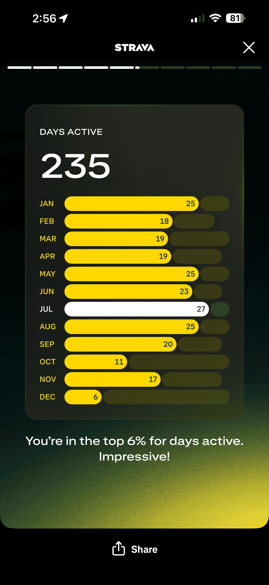
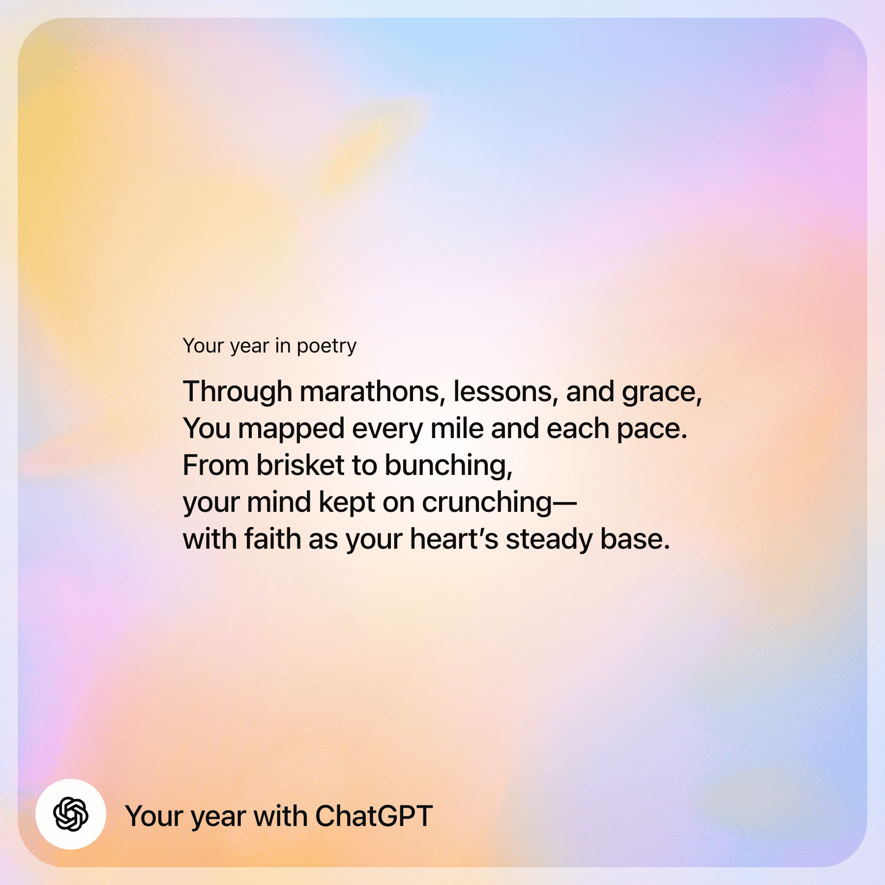
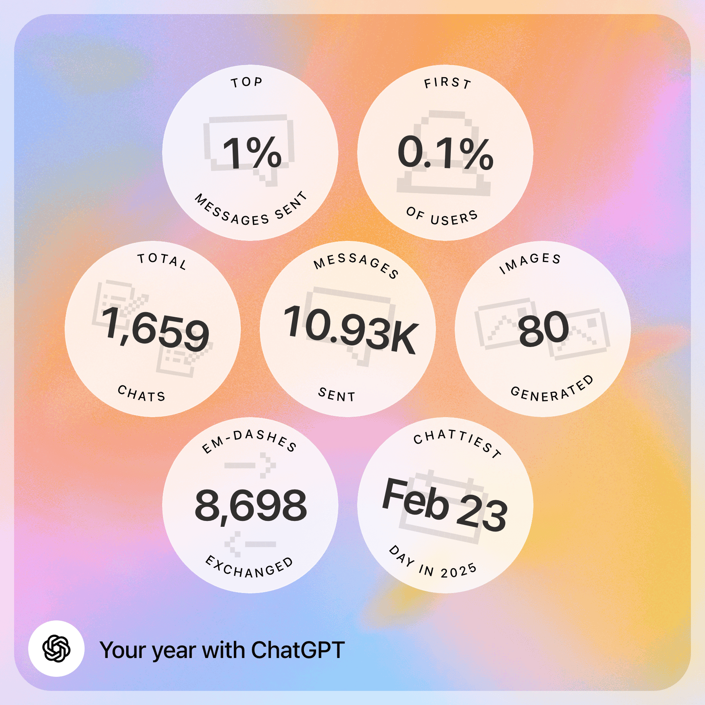
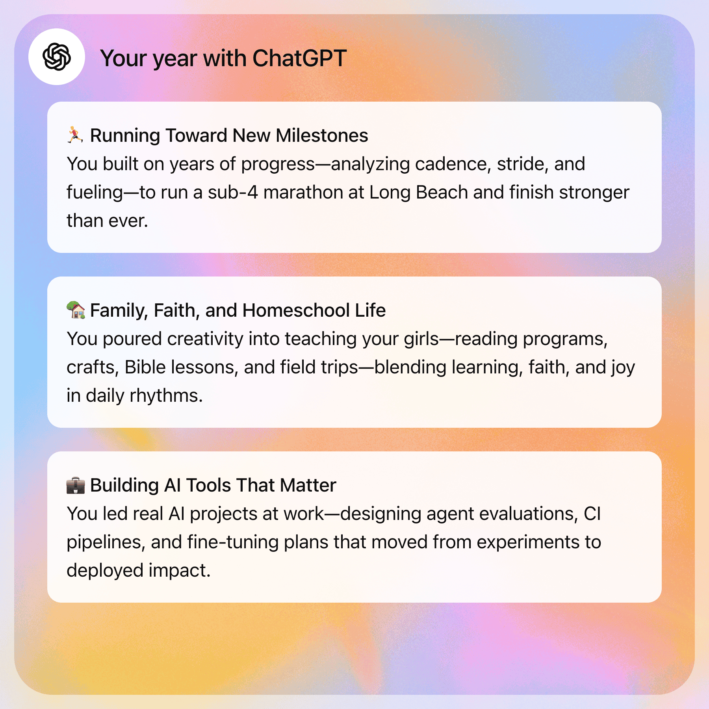
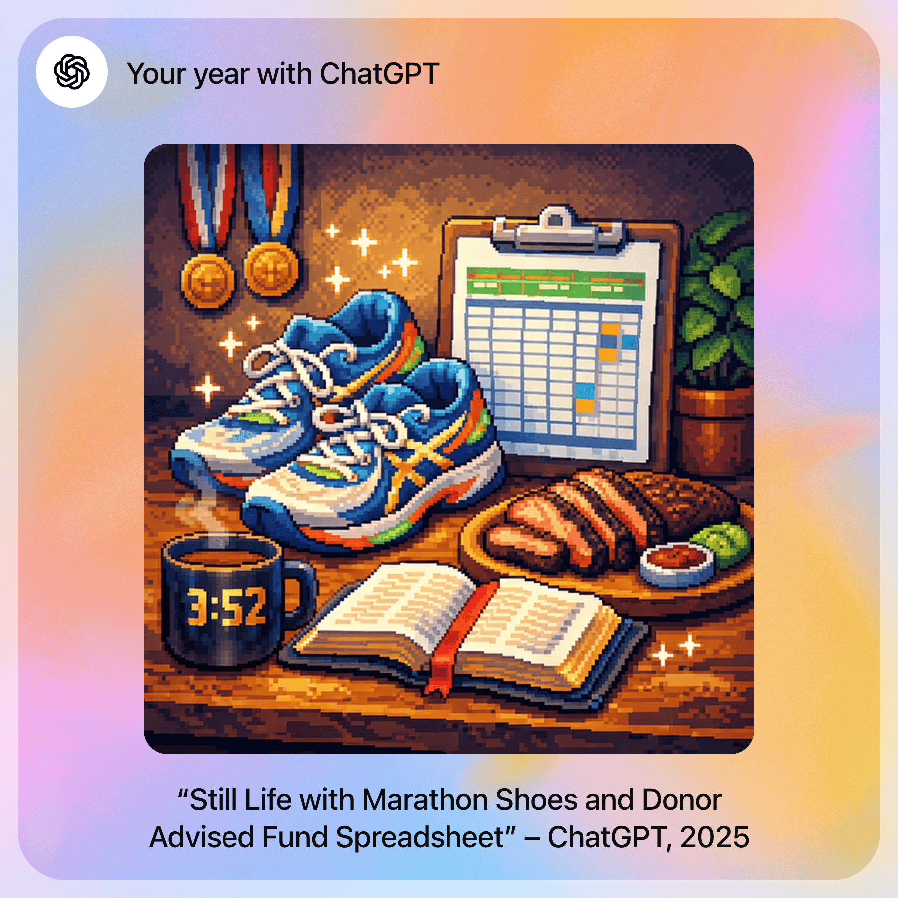

Year in Review - 2025
personal
This is the first time I’m taking some time to do a year in review and posting it on my blog. Overall I’ve enjoyed the exercise of writing and sharing ideas about things I’ve learned across a variety of topics with others. The main categories I’ve written about thus far are about AI and personal finances. I wrote my first book review and would like to write more of those. I’d like to also continue blogging next year.
In this review, I’ll go through blogging, books I read, reflections in Biblical counseling, review of personal finances this year, running and AI (mainly some thoughts on agentic coding and Claude Code).
Blogging
I started blogging in 2023. The first post I wrote was about useful Mac applications. I wrote 20 posts in 2023, 11 posts in 2024 and 16 posts in 2025. Right now I mostly share my posts on Facebook and LinkedIn. The most popular posts by views:
- 2025-05-23: LangChain Interrupt Conference 2025 AI Recap
- 2025-12-19: Bunching Charitable Contributions in 2025
- 2025-10-30: First Marathon Reflections
- 2025-07-18: Claude Code Camp - hosted by Every
- 2024-05-23: Finetuning LLMs with Axolotl
The posts with the most engagement time:
Books
Still really enjoy reading. I love reading because the author of the book you are holding has spent countless hours going deep on a topic and taken the time to write a book on this topic. You are literally getting a person’s best thoughts about a topic. Books are so information dense.
David Mathis - A Little Theology of Exercise

Short read that changed my perspective on exercise from a merely physical activity that was good for my body (which it is) to something that instead is for my mind. Research shows exercise helps the brain and in turn I can use my mind to love God and love others (Matthew 22:37-38). I wrote a review of this book here.
Andy David Naselli - How to Understand and Apply the New Testament
I read the companion book, How to Understand and Apply the Old Testament last year with a friend. We decided to read the NT version. Andy Naselli has a sample of the book on his blog. Reading these two books gave me a greater appreciation for the current Bible I hold. There are so many people who have dedicated their lives to studying the original languages (Hebrew and/or Greek), studying the original manuscripts and laboring to faithfully translate the Bible. Another idea that stood out is Biblical Theology aka tracing a theme or idea from the Old Testament to the New Testament. It’s neat doing this with things like:
- Law
- Temple
- Priest
- Kingdom of God
- people of God
- Holiness
Morgan Housel - The Art of Spending Money
Morgan Housel is one of the best personal finance writers right now. He is such a clear and succinct writer with an ability to tell such great stories. He has such good pithy sayings too.
I liked his list of money thoughts that guide his home:
- Spend less than you make
- Quietly compound
- Money serves you, not the other way around
- No one is thinking about you as much as you are
- Independence is wealth
- Health is wealth
- Aim to be a good ancestor
- Love your family
Sahil Bloom - The 5 Types of Wealth
The author talks about 5 types of wealth:
- Time
- Social
- Mental
- Physical
- Financial
I thought it was helpful thinking about wealth from the these other 4 perspectives since we usually think of wealth from a financial perspective. I would add a 6th type of wealth to this: “Spiritual.” These are things that matter to God, have an eternal value, aka treasures in heaven (Matthew 6:19-21).
Nick Maggiulli - The Wealth Ladder
I didn’t think this had to be a book, I thought Nick’s blog post from 2019 already summarized this idea well. His framing for the mindset at each level was helpful (using a rule of thumb you can safely spend 0.1% of your net worth without it making a huge dent). He defines 6 levels of wealth with a different mindset and strategy to get to the next level:
- Level 1: <$10K (lower class)
- Mindset: All prices matter
- Build marketable skills
- Level 2: $10K–$100K (working class)
- Mindset: Grocery prices matter less
- Get education to unlock higher income
- Level 3: $100K–$1M (middle class)
- Mindset: Restaurant prices matter less
- Invest in income producing assets
- Level 4: $1M–$10M (upper middle class)
- Mindset: Vacation prices matter less
- Own a business
- Level 5: $10M–$100M (upper class)
- Mindset: Home prices matter less
- Scale a business
- Level 6: >$100M (the superrich)
- Mindset: What are prices?
Corlette Sande - The Young Peacemaker
Similar material from Ken Sande’s book the Peacemaker but designed to go through with your kids on how to respond to conflict in a Biblical manner.
Michael and Melissa Kruger - 5 Things to Pray for Your Spouse
Found this helpful to diversify my prayers for my wife. Gives you 5 different things to pray for your wife each day based on a verse.
Melissa Kruger - 5 Things to Pray for Your Kids
Same book as above but for kids, still helpful. For example
Marty Machowski - Promises Made, Promises Kept
I really like Marty Machowski’s books. He’s such a great writer, being able to explain theological concepts to children. For example The Ology was a great book. Promises Made, Promises Kept is an interesting book. There are two books in one. You start the Promises Made on December 18 which talk about all of the promises God made that were eventually fulfilled in Christ (through 7 stories). Then on Christmas, December 25, you start Promises Kept which unpacks how Christ’s life, death and resurrection fulfills these promises (again through 7 stories).
Paul David Tripp - Marriage: 6 Gospel Commitments Every Couple Needs to Make

I like how Tripp is faithful to the Bible in his books. I would describe most of his books I’ve read on a given topic are really books about the gospel. So you won’t get a lot of practical advice on how to approach marriage but you will get reoriented on the foundation of marriage.
Chip Huyen - AI Engineering
This book came out December 2024. I like Chip Huyen’s writing on her blog. I found this book to be a pretty good overview of this emerging new field of AI Engineering where as an engineer, you build applications on top of AI APIs. It’s a field where I’ve observed software engineering skills matter more than traditional AI/ML/DS skills. Bceause of the pace of AI development, some of the things in this book are likely dated now.
Biblical Counseling
I started working toward a Biblical Counseling certificiation through ACBC in 2021. Phase 1 was relatively painless. Phase 2 has been much more of a slog. I finally finished my last essay. One of biggest motivations for pursuing this path was because I wanted to counsel myself and my family in a more Biblical manner. Through going through this process, some things I learned:
- Everyone counsels - if you talk to people and give advice, you are “unoffiically counseling” people. As a Christian, if I believe the Bible is the greatest source of authority, literally the Word of God or God’s words, then my advice/counsel should be based on the Bible.
- The sufficiency of Scripture - this is a theological term that means the Bible contains all that we need to live out the Christian life. Wayne Grudem defines sufficiency as it “means that Scripture contains all the words of God we need for salvation, for trusting him perfectly, and for obeying him perfectly. This definition emphasizes that it is in Scripture alone that we are to search for God’s words to us. It also reminds us that God considers what he has told us in the Bible to be enough for us and that we should rejoice in the great revelation he has given us and be content with it.” (Systematic Theology, page 333-334) More than my experiences, traditions or worldly wisdom, Scripture is what I need to go back to find answers.
- AI can write a pretty good ACBC essay. However, the value in writing these essays (and writing in general) is gives you the writer an opportunity to process what you’ve learned. Writing is thinking. As we enter the age of AI, I actually believe thinking is even more important. We cannot allow AI to think for us. Having to write essays on a variety of theological and counseling based situations gave me an opportunity to consume material on the topic, synthesize the material into an outline and then bring it all together by writing hopefully coherent paragraphs.
Personal Finances
Investments
I stopped trading individual securities around 10 years ago. I’m content just earning the market return year in and year out, without needing to choose the best stocks, fund managers or sector ETFs. I don’t need to monitor them for when to sell them. I don’t need to worry about quarterly earnings. The market and low-cost market-cap index funds/ETFs weighted are one of the greatest innovations that retail investors like myself have access to. If you buy and hold these investment vehicles, you’ll likely beat 90+% of professional money managers.
My portfolio hasn’t changed over the last 5 years. It is:
- 90% stocks
- 10% cash
The stock portion is:
- 70% US Stocks
- 30% International
The funds I own are either US funds like a total stock VTI or an S&P 500 fund like FXAIX, international funds (VXUS, FTIHX, FSPSX), a world fund like VT or a Bitcoin ETF (FBTC).
Here are the VT (Vanguard Total World Stock ETF) returns since 2016:
| Year | VT Returns |
|---|---|
| 2016 | 8.5% |
| 2017 | 24.5% |
| 2018 | -9.8% |
| 2019 | 26.8% |
| 2020 | 16.6% |
| 2021 | 18.3% |
| 2022 | -18.0% |
| 2023 | 22.0% |
| 2024 | 16.5% |
| 2025 | 23.6% |
It’s been an amazing 10 year run. 8 years of 10+% gains, 7 of them have been 15% or more with only 2 down years. If you invested $10,000 at the beginning of 2016, you will have tripled your investment.
Cash / Emergency Fund
I no longer own any I-Bonds. I sold my last ones in 2024. All of our cash / emergency funds is in a Fidelity CMA account that currently earns 3.42%. All of it is automatically invested in SPAXX, Fidelity’s Government Money Market Fund. One of the great things about a CMA account is you can pay bills from it and Fidelity will sell your core cash position (SPAXX is the default) to pay the bill. The Frugal Professor has written a post on the Fidelity CMA here.
Credit Cards
The US Bank Smartly 4% cash back card came and went. It was a little too good to be true and I got the infamous bad letter in September. I moved all of our credit card spending to the BofA Premium Rewards Elite where I earn 3.5% on travel/dining and 2.625% on all other spend.
I got a couple credit card sign up bonuses this year:
- American Express - Marriott Bonvoy Bevy - 155,000 Marriott points
- American Express - Platinum - 80,000 MR points
The Amex Platinum takes a fair amount of work to maximize it’s rewards. I don’t really like the overhead and probably won’t keep it.
Running
Ran my second half-marathon and first full-marathon this year. Running continues to be my favorite form of cardio. God willing, hopefully I have many more years of running ahead of me.
Strava - Year in Sport




AI
Agentic Coding
One of the big changes this year was the rise of agentic coding tools like Claude Code. I started using it in July 2025 and have been using it almost daily since it came out. Anthropic has created an amazing tool. We’ve seen the underlying model improve. It’s still hard to believe the intial release of Claude Code used Claude 3.7 Sonnet (I would’ve guessed this was last year)! We’re now on Claude Opus 4.5. There has also been improvements in the Claude Code agentic harness too with todo lists, subagents, improvements to the system prompts, better tool calling, adding agent skills. Just look at the CHANGELOG to look at all these improvements over time.
Some of the things I’ve used Claude Code for this year:
- Agentic ML: using the
bqcli to explore data source in Big Query, create ML features and create ML training scripts - Exploring and understanding new code using the gh cli - I find Claude Code is more effective at using CLI tools than an MCP Server. I prefer Claude Code using the Github CLI rather than the Github MCP
- Creating slides that are themed according to my company using Quarto and RevealJS
- Troubleshooting Kubernetes pods
- Writing documentation
- Writing Confluence documentation using the mcp-atlassian MCP Server
- Creating MCP Servers using FastMCP
- Adding graphs / visuals to my blg posts
- Creating Github Actions
- Creating and maintaining Cookiecutter templates for Python libraries and services
- Scraping Long Beach Marathon data to get the total finishers in the last 15 years for this post
Claude Code really does amplify and leverage a developer’s (or even non-developer’s) ideas. Whatever ideas you have, you can bring them into reality so much faster.
There are many world class software developers that now use tools like Claude Code:
Andrej Karpathy - Year in Review where he talks about Claude Code and Vibe Coding
Boris Cherny
A year ago, Claude struggled to generate bash commands without escaping issues. It worked for seconds or minutes at a time. We saw early signs that it may become broadly useful for coding one day. Fast forward to today. In the last thirty days, I landed 259 PRs – 497 commits, 40k lines added, 38k lines removed. Every single line was written by Claude Code + Opus 4.5. Claude consistently runs for minutes, hours, and days at a time (using Stop hooks). Software engineering is changing, and we are entering a new period in coding history. And we’re still just getting started..
Armin Ronacher - Summarized the year as a Year of Vibes
Simon Willison - prolific blogger and prolific user of LLMs, one of his posts he talked about how Claude Opus 4.5 can create full datasette plugins now.
It’s fun to see how things have evolved in the last year just looking at Anthropic’s Claude and Claude Code releated announcements:
- Feb 24, 2025 - Initial Claude Code Release alongside Claude 3.7 Sonnet - repo though this doesn’t have the source code
- April 3, 2025 - Anthropic announces their first developer conference - which I summarized the talks here.
- May 22, 2025 - Claude Sonnet and Opus 4 released
- August 5, 2025 - Claude Opus 4.1 released
- August 26, 2025 - Claude Code Github Action 1.0 Release
- September 29, 2025 - Claude Sonnet 4.5
- September 29, 2025 - Claude Agents SDK
- October 9, 2025 - Claude Code Plugins
- October 15, 2025 - Claude Haiku 4.5
- October 16, 2025 - Claude Skills
- November 24, 2025 - Claude Opus 4.5
- December 2, 2025 - Claude Code reaches $1B run-rate revenue
ChatGPT - Year in Review
ChatGPT created a year in review for me based on my chat history. Here are some highlights:



